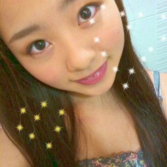
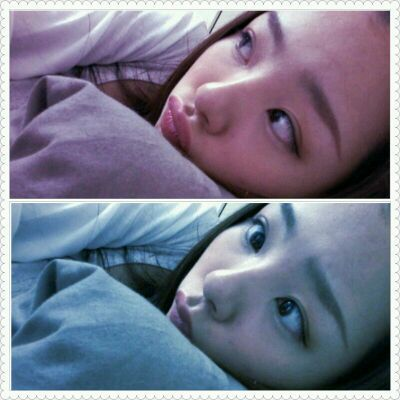

| 2012/05 29 Tue | 川村真洋 ハロー質問返し等々♪ろってぃー |
はろってぃ(*^^*)

ろってぃーだようっ♪
昨日は,ストリーミングラジオを
やってきました^ω^
そして今日は
乃木坂浪漫のお仕事だよ^^♪/
質問返しいっちゃいますっ・ω・*
★コーデこれからも
のせてくれる?
☆りょっ*・Д・)>♪
★今度,仕事着のまま
握手会いっちゃおっかな?
☆すばらしっ・Д・!!)))
ぢゃあ、まひろも
ジャージで参戦だっっ☆笑
★まひろちゃんが
東京で一番好きな所
どこですか?
☆まだ全然東京のこと
分かんないから
逆に教えてほしいなっ*・ω・*♪
★男ってどんなアクセサリー
つけたらいいのかな?
☆自分らしさがでる物や
自分のキャラが引き立つもの
とかがいいんぢゃないかな?
=・ω・=
★何でゾウさんにしたの?
☆かわいいからだ♪・ε・
好きだからだ,
にっ^ω^)V
★上着 2線ですよね?
☆このブルーの上着
アディダスです^^
あの私服は
全体的にブルーで
白のハンチングに
サングラスさん。で
ちょっとサーフっぽい所に
アディダスで
スポーティー系も出して
オレンジのリュックで
ストリート系も
出しましたっ*・ε・*
にっ(^_^)v
★ネックレスどこで
買ったんですか?
☆はっらっじゅくーー。
安い安いー
あーしは買い物上手だべ。笑
自分でゆうな。
★オーバーオールって
サロッペットってゆうんよなあ?
しっとった?
☆おん♪
知っとるよ〜(⌒‐⌒)
★オーバーオールとツナギ
とかに、合うアクセサリー
ってあるん?
☆どんなオーバーオールや
ツナギかにもよると
思いまっす>ω<)>♪にっ
★日曜日は、
まりか遅刻大丈夫やった?
☆大丈夫でした^^
同じ位に着いたから
いい感じよっ*・ω・*
だけど、買い物終わった後
実はハプニングがあってさぁぁ。
まりか♪が落とし物して
探しまくりーの
歩きまくりーの
大変でした....。
チーン(;=д=)
★深夜にあった地震
大丈夫だった?
☆あの時、
すぐ電気着けて
短パン履いて
テレビつけましたっ^^
大丈夫でした♪
★ろってぃーもtestの点
悪かったでしょ?
☆中学の時は理数がなかなか
よかったですよぉ〜(*=ω=*)
高校は難しくて
理数も必死ですよぉ〜・Д・*
★紅茶ってぃーの部屋って
かわいい感じ?かっこいい感じ?
☆どちらかと言えば
かっこいい感じにしてたけど
最近は、生活感溢れた感じに
なってきちゃったぁ〜(⌒‐⌒)
★ろってぃー
勉強大好きだもんね?
☆大好きと言ったら
嘘になるかなっ(*^^*)
いぇいっ。
★ろってぃー大丈夫か?
疲れてないか?
なんかあったか?
☆大丈夫!元気!
★てか、ろってぃーって
アイス好き?
何味系?抹茶でしょwww?
☆アイス大好き・ω・!
抹茶そして
チョコ、キャラメル、
ナッツ系が好きっω
★ろってぃーどうかなぁ?
少しは俺、ろってぃーのこと
わかってるかなぁ?
☆本当にまひろのこと
ちゃんと見てくれてんだなぁ〜
って思います^ω^
ありがとうございます、
嬉しいっ(*^^*)

変顔でごめんなさい。・ω・`
たまにはねっっ...,
のし。